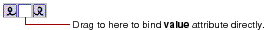

Table of Contents
Table of Contents  Next Section
Table of Contents
Next Section
Table of Contents  Previous Section
Previous Section
WebObjects Builder provides a shortcut for binding the value attribute of commonly used elements such as WOString.

Instead of dragging to one of the icons, drag to the center binding box. The binding appears directly in the box, and the Inspector doesn't come to the front.
Table of Contents Next Section